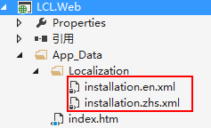

一个应用至少有一种UI语言，许多应用不止有一种语言。LCL为应用提供了一个灵活的本地化系统。
第一件事情就是需要在Web.config文件中声明支持哪些语言，如下所示：
<lconfig> <language name="zh" path="~/App_Data/Localization/installation.zhs.xml" />> </lconfig>
本地化文本可以存储在不同的资源中。甚至你可以在相同的应用中使用不止一种语言（如果你有不止一个模块，每个模块可以定义一个单独的本地化资源）。 应该为本地化资源实现ILocalizationService接口，然后将它注册到ABP的本地化配置中。
每个本地化资源必须有一个唯一的资源名。 XML文件和 资源文件是预定义的本地化资源类型。
本地化文本可以存储在XML文件中，XML文件的内容就像下面展示的那样：
<?xml version="1.0" encoding="utf-8" ?>
<language name="English" isdefault="true" isrighttoleft="false">
< localeresource name="AdminEmail">
< value>Admin user email </value>
</localeresource>
</language>
XML文件必须是utf-8编码， name="English"声明该XML文件包含了英语文本。对于文本节点， name特性用于标识一个文本。你可以使用 value特性或者 inner text(如上面的最后一个)给本地化文本赋值。如下所示， 我们为每种语言创建了一个单独的XML文件：

当创建了资源并把它注册到ABP的本地化系统之后，文本就能轻易地本地化了。
在控制中也可以使用如下方法：
this._localizationService.GetResource("资源名称");
在视图中也可以使用相同的L方法：
@T("资源名称").Text
使用编码方式扩展
public partial class RbacPlugin : BasePlugin, IAdminMenuPlugin
{
public override void Install()
{
//locales
this.AddOrUpdatePluginLocaleResource("Entity.Role", "角色管理");
}
｝
直接修改XML文件